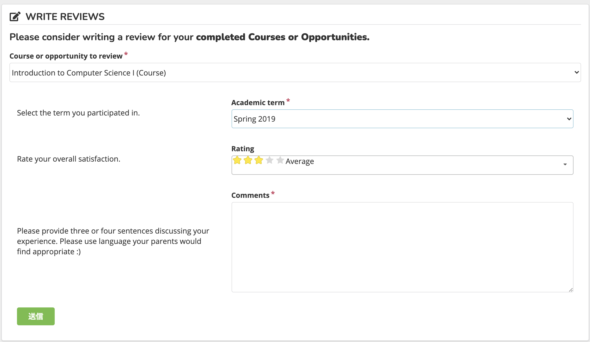

A Critical Review Of RadGrad
As a University of Hawaii student, your best friend during your undergraduate career is probably going to be Star. Star allows you to register for courses, pay for your tuition, scholarship, and see your current academic standings. However, as a STEM, especially as an ICS student there are moments where you feel Star is not enough. Star does not provide internship details or in-depth recommended career paths. To support the many flaws, an ICS student has RadGrad. This application provides ICS students ways on how they can attain their career goals, a list of courses they should take, and many more. Additionally, it has a level and point system like Pokemon providing an incentive to do better. Despite the many strength, because of the “Ying and Yang” rule, there are some weaknesses that RadGrad struggles in.

A screenshot of a page from RadGrad
Strength
- Priority List System The things that are necessary and not are organized neatly. Furthermore, within each card that needs action a simple explanation on how to fix is provided making it easier for user to fix or update.
- Course Page The course page is automatically set up; therefore, users do not have to manually add courses one by one. However, students still have the ability to manually add courses based on their interests. Which is helpful to student to schedule out their future semesters more effectively than Star.
Weakness
Here are some of the following the current RadGrad system tends to be weak at.- Consistency The current application lacks in the area of design consistency. For instance, within the opportunities page the usage of bold font is inconsistent. For example, Amazon Web Service has its name bolded whereas Android or IOS does not. From a personal opinion, if one is bolded maybe, it is better to do so for the others.
- Filter or Search Function As of right now, RadGrad has a good search function, but I still think it is not as user-friendly as it could be. For example, in the Interest Page, maybe the varieties listed could be filter based on the category of its interest. For instance, Java, C, or Python could be programming languages whereas others could be different. Additionally, something similar to this could be added to the Career Page also.
- Student Planner Currently, it is said that Student Planner should be a reflection on the registered information on Star. However, as of right now it contains ICS courses that I have no recollection of registering both on Star or RadGrad, The other case would be that I have registered to take a certain course next semester, but it is claiming that I a repeating a certain course. For instance, I am registered for ICS 313 in Fall 2021, but on RadGrad’s student planner it is listed that I took it in the Spring 2021 and will take it again in the Fall.
Another example is that some buttons have autotranslations on despite everything else is in English. For instance, on the student review pages, the submit button for me is written in Japanese kanji rather than English. While making assumptions goes against my mathematical background, I assume that most of the RadGrad users will understand what submit is. Therefore, consistency should be applied to the language area too. 
Everything else but submit is in English.
Areas For Growth Opportunity
Despite the strength and weakness listed above, there are many areas in which can be improved upon.- Adding a Column For Class Environment With the upcoming Fall 2021 semester, the school is gradually transitioning back to an in-person environment. However, that implies that there is going to be a mixture, of course, such as in-person, hybrid, and online. In addition, online even has its subcategory of synchronous and asynchronous courses. For instance, my ICS 321 course in Spring 2021 was online asynchronous but in Fall 2021, ICS 485 is scheduled to be in person or at least staggered. Furthermore, from personal experience, I was advised by Gerald Lau to take ICS 212 at Leeward Community College. Therefore, maybe when students are adding reviews another dropdown could be added to indicate the campus or if they took it at Manoa or not. That way prospective students can have a better idea on whether which campus they should take courses at.
- Separate Teaching and Tutoring On the course planner page, Teaching and Tutoring are categorized as one of the same things. While this may sound more personal, I have a feeling that they are two different things. From a personal opinion, I see teaching covering one subject versus tutoring cover multiple subjects. Especially, with the Learning Assistant Program expanding, maybe it might be effective to separate the two into two bars.
- Verification Process It is better to believe in the goodness of people there are people who are rotten and will cheat out of a system. Maybe when students are typing for the verification process for an internship, there could be a box that asks for the supervisor’s email or contact information. That way the RadGrad staff can verify just to be safe.